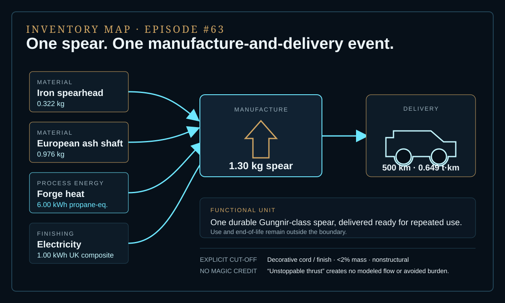
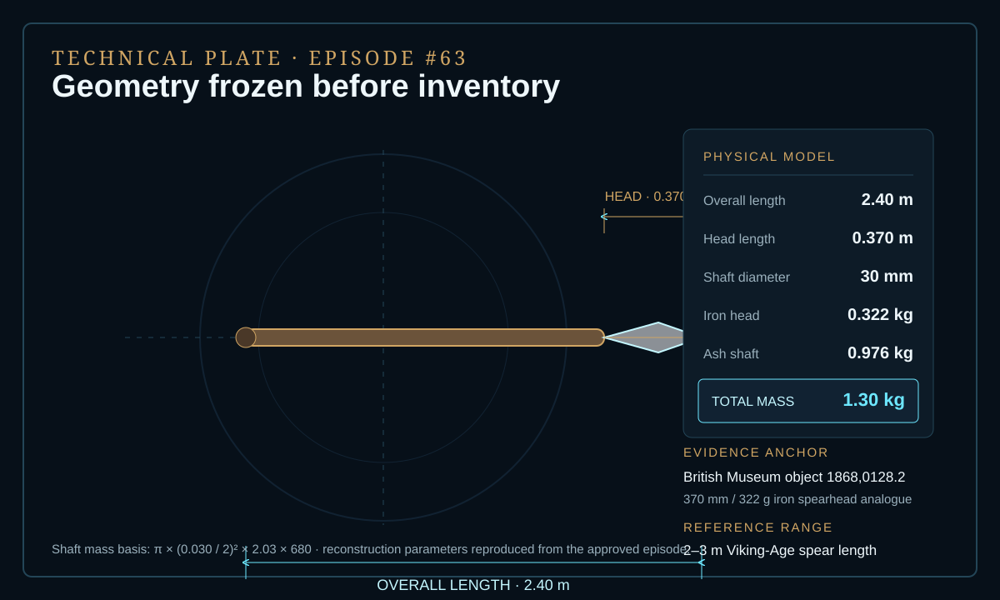
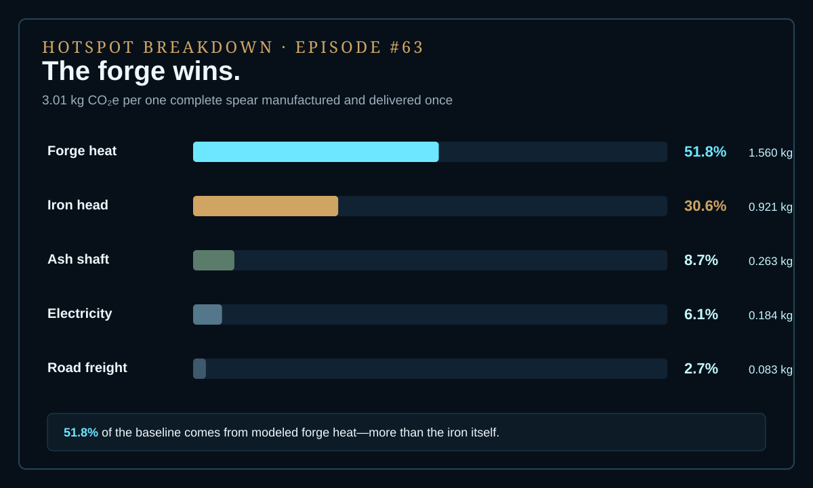

EPISODE #63 · MYTHS & LEGENDS
Gungnir
What remains when an unstoppable spear is reduced to one measurable forge event?
THE SUBJECT
A mythic thrust. A measurable forge.
The approved reconstruction freezes one durable Gungnir-class spear before inventory: 2.40 m overall, 1.30 kg total mass, a 0.370 m / 0.322 kg iron head and a 0.976 kg European ash shaft. The 2.40 m baseline sits inside the documented 2–3 m Viking-Age range, while the iron-head geometry is anchored to British Museum object 1868,0128.2.
The functional unit is one complete artifact delivered ready for repeated ceremonial and combat use—not one throw or one battle. Ferrous-metal production, the ash shaft, forge heat, finishing electricity and a 500 km delivery proxy are included. The mythic “unstoppable thrust” property, use, maintenance, battle damage and end-of-life are excluded. The 500 km distance is a narrative logistics proxy, not a claim about mythic geography.
Frozen geometry
2.40 m overall and 1.30 kg total mass, with a 30 mm ash shaft and a 0.370 m iron head.
Material split
0.322 kg iron spearhead plus 0.976 kg European ash shaft before the manufacturing energy is added.
Forge event
6.0 kWh propane-equivalent forge heat and 1.0 kWh UK electricity-equivalent finishing energy.
Main hotspot
Forge heat contributes 51.8% of the baseline footprint, ahead of the iron head at 30.6%.
VISUAL MODEL
One spear, five contributing flows
The inventory map separates materials, forge energy, finishing and delivery. The technical plate records the geometry and analogue frozen before inventory.


DETAILED LIFE CYCLE INVENTORY
Every flow gets a basis
All five contributing flows have an explicit factor before the result appears. Decorative cord and finish remain an explicit <2% mass cut-off.
| Stage | Component / activity | Activity data | Climate change | Modelling basis |
|---|---|---|---|---|
| Materials | Iron spearhead | 0.322 kg | 0.921 kg CO₂e · 30.6% | Museum-object analogue. Primary steel-can material proxy: 2.86158 kg CO₂e/kg. |
| Materials | European ash shaft | 0.976 kg | 0.263 kg CO₂e · 8.7% | Calculated from geometry × density. Primary wood material proxy: 0.269504 kg CO₂e/kg. |
| Forge | Reheat and shape | 6.00 kWh | 1.560 kg CO₂e · 51.8% | Engineering baseline using Net CV propane-equivalent heat. Propane + WTT: 0.25994 kg CO₂e/kWh. |
| Finishing | Grinding, drilling and polishing equivalent | 1.00 kWh | 0.184 kg CO₂e · 6.1% | UK electricity + T&D + WTT composite: 0.18436 kg CO₂e/kWh. |
| Delivery | Road freight | 0.649 t·km | 0.083 kg CO₂e · 2.7% | Approved 1.30 kg × 500 km logistics activity. Average HGV + WTT: 0.12715 kg CO₂e/t·km. |
| Cut-off | Decorative cord / finish | 0 | Cut off | <2% mass; nonstructural. |
| Approved baseline total | 3.01 kg CO₂e | Per one complete artifact manufactured and delivered once. | ||
Included
Ferrous-metal production, ash shaft production, forge heat plus upstream fuel, finishing electricity and the 500 km delivery proxy.
Excluded
Mythic “unstoppable thrust,” use, maintenance, battle damage and end-of-life / recovery.
Proxy disclosure
DEFRA/DESNZ does not publish a “Viking spearhead” factor. The 2026 steel-can primary-material factor is used as a transparent ferrous-metal proxy, not as a claim about historical steelmaking.
Boundary rule
Cut-off occurs at delivery. No magical performance credit and no avoided burden are assigned.
HOTSPOT
The forge wins
Forge heat contributes 51.8%—more than the iron itself. Road freight remains small because the delivered artifact weighs only 1.30 kg.

Main result
3.01 kg CO₂e
One complete Gungnir-class spear, manufactured and delivered once.
Forge heat
51.8%
The dominant modeled contribution.
Iron head
30.6%
The second-largest contribution under the primary steel proxy.
Road freight
2.7%
A 500 km delivery remains secondary for a 1.30 kg artifact.
Sensitivity A · Forge heat
3 kWh → 2.23 kg CO₂e · −25.9%
Efficient single heat / low reheating.
6 kWh → 3.01 kg CO₂e · baseline
Engineering baseline.
12 kWh → 4.57 kg CO₂e · +51.8%
Repeated reheats / low furnace efficiency.
Sensitivity B · Iron factor
1.82158 → 2.68 kg CO₂e · −11.1%
Low-intensity case S11.
2.86158 → 3.01 kg CO₂e · baseline
Baseline case S1.
3.82195 → 3.32 kg CO₂e · +10.3%
High-intensity case S12.
Physical uncertainty
Changing only forge heat demand moves the total from 2.23 to 4.57 kg CO₂e. The physical reconstruction—not transport—is the largest uncertainty lever.
Model insight
Material-source uncertainty moves the total by about ±10%, materially less than the forge-heat range. The baseline iron factor matters, but the heat-demand assumption matters more.
THE VERDICT
A legendary weapon can still be ruled by ordinary energy.
The modeled insight survives without the myth: shaping energy dominates a lightweight durable artifact. The fire needed to shape the spear outweighs the road that carries it.